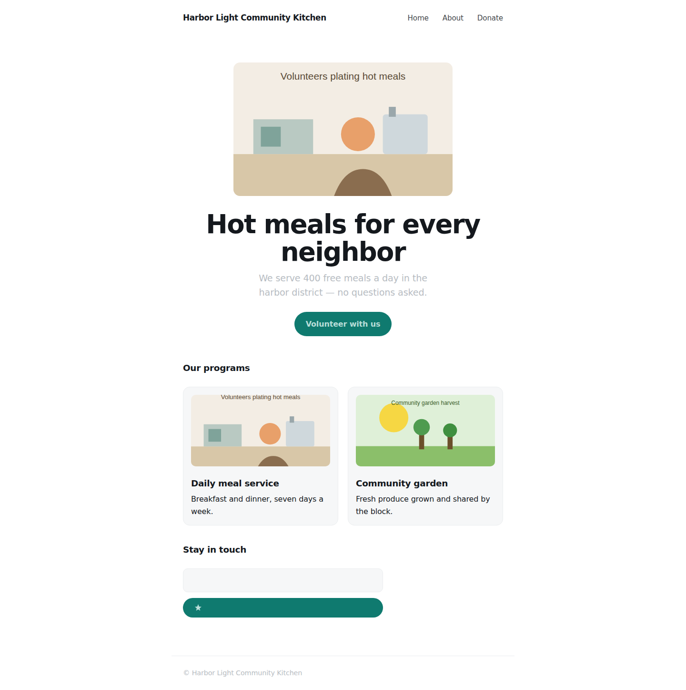
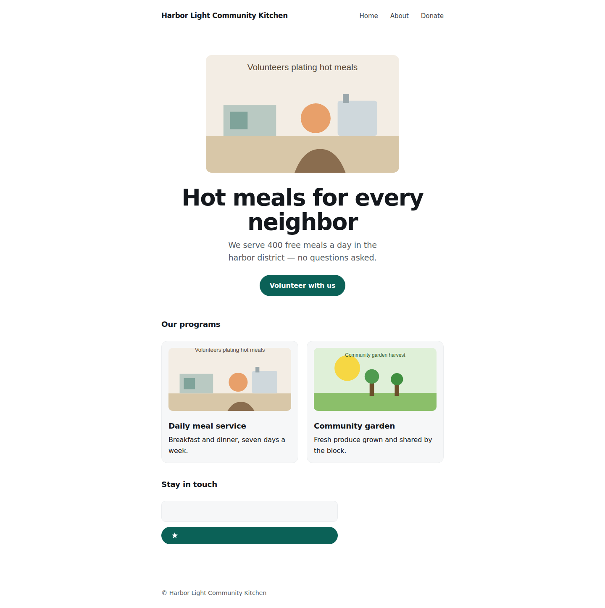
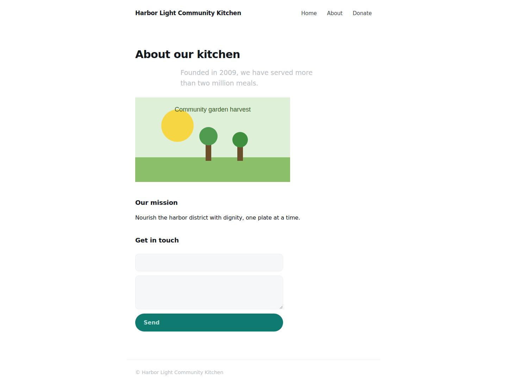
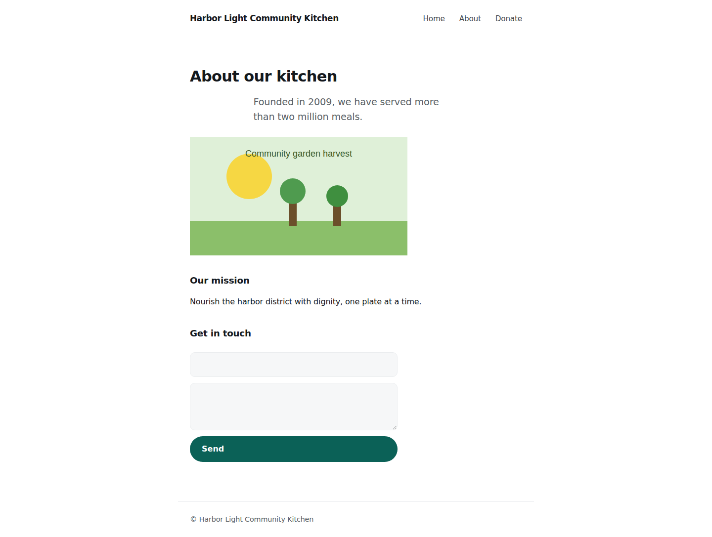
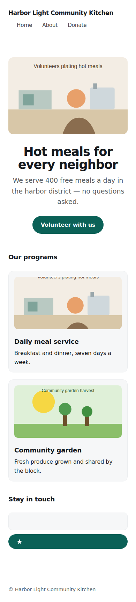
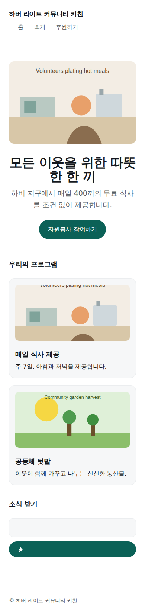
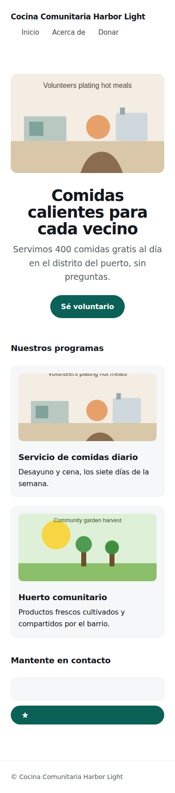
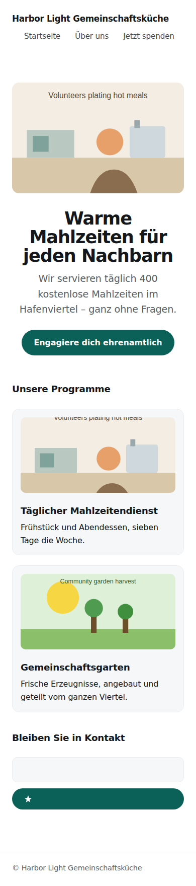

An autonomous web remediation engine that sees its own work. One engine, swappable policies — we ran it twice on two different problems.
WCAG 2.1 AA · axe-core + keyboard + vision
ko / es / de · extraction + completeness + overflow
| ✅ | axe-core: 0 serious/critical violations, desktop + mobile | A | 0 violations |
| ✅ | Keyboard: all reachable, logical order, no traps, visible focus | A | reachable=true focusRing=true noTraps=true |
| ✅ | Meaningful alt text on every image (decorative = empty) | A+B | image-alt=0, unnamed nodes=0 (names confirmed by vision) |
| ✅ | Color contrast ≥ AA, brand hue preserved | A | color-contrast=0 |
| ✅ | Valid heading hierarchy (one h1, no skipped levels) | A | heading-order=0, page-has-heading-one=0 |
| ✅ | Every input has a programmatic label; errors via aria-live | A | label=0 (aria-live status region present) |
| ✅ | Layout diff within threshold (contrast/focus allowed, shifts rejected) | B | 1 flagged, all accepted by vision |
| ➖ | Lighthouse accessibility ≥ 95 | A | Lighthouse not installed in this environment |
What a screen reader announces on the home page, before and after. Nobody wrote these names by filename — they were generated by looking at the images.
| role | screen reader: before | after |
|---|---|---|
| img | ‹empty — announced as "img"› | Volunteers plating hot meals at the kitchen counter |
| img | ‹empty — announced as "img"› | Volunteers serving hot meals from the counter |
| img | ‹empty — announced as "img"› | Fruit trees and raised beds in the community garden under a bright sun |
| link | Home | Home |
| link | About | About |
| link | Donate | Donate |
| link | Volunteer with us | Volunteer with us |
| link | ‹empty — announced as "link"› | Save Harbor Light to your favorites |
| textbox | ‹empty — announced as "textbox"› | Email address |
about.html heading fix: re-tagging the title shifted the page ~12px because the new class set line-height:1.2 while the original inherited 1.6. Nobody told it this broke — it saw it. The Builder matched the line-height and it passed. (Logged in NOTES.md.)



| ✅ | 0 hardcoded user-facing strings (pseudo-locale proves extraction total) | A | hardcoded-string=0, pseudo-leak=0 |
| ✅ | All 3 locale catalogs complete (no missing/untranslated keys) | A | locale-completeness=0 |
| ✅ | No overflow/truncation/overlap per locale at 1440 & 390 (German = stress test) | B | no overflow in any locale |
| ➖ | Dates & numbers via Intl, not string concatenation | A | no dynamic date/number formatting on the demo target |
| ✅ | lang attribute correct per locale; language switcher works | A+B | langs={"en":"en","ko":"ko","es":"es","de":"de"} |
| ✅ | Base-locale (English) pixel-identical to pre-migration baseline | B | 1 flagged, all accepted by vision |
<img> on about.html overflowing the 390px viewport in every locale — a defect the accessibility scanner never caught (axe doesn't test horizontal overflow). Constrained to max-width:100%; all locales clean. German is the stress test.


